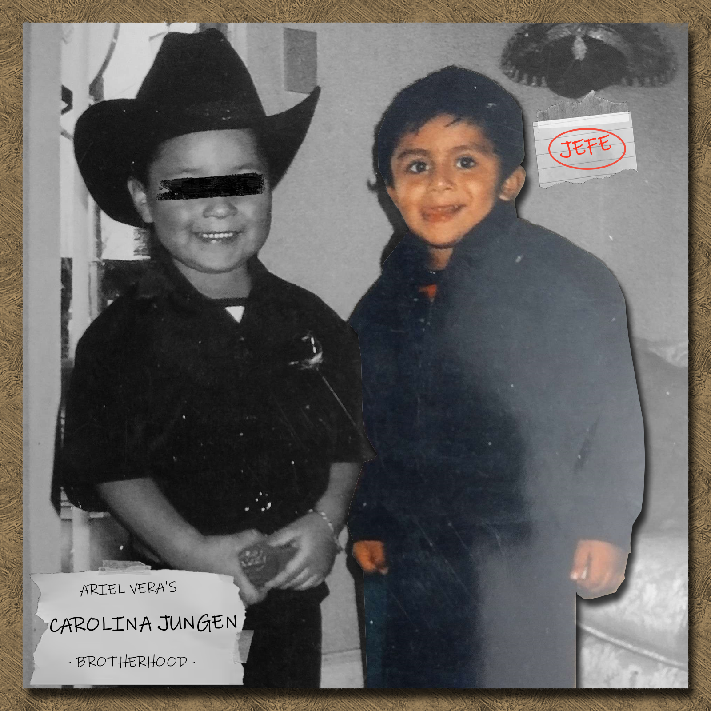

Richard [REDACTED] on the left, Ariel Vera on the right - a true brotherhood.
Personal Background: Born in New Jersey, raised in North Carolina.
Professional Background: Prior to college, I was a vendor for various small businesses.
Academic Background: Graduated highschool. Currently a sophomore who is pursuing a degree in Computer Science with a Cyber Security concentration. Will be graduating early 2026.
Background in this Subject: Never fully committed to full stack web development, but have played with it.
Primary Computer Platform: A windows desktop and laptop.
Courses I am Taking and Why:
MATH 1242: Core for major.
LBST 2301: A general education requirement. Fortunately, my last.
ITIS 3200: Core for Cyber Security concentration.
PHYS 2101: Would like to apply mathematical skills and learn newer concepts.
ITIS 3135: Core for Cyber Security concentration. Additionally, I would like to dabble with full stack web development.
GERM 1202: I want to become good at German and travel one day.
Funny/Interesting Item to Remember me by: I sometimes photoshop.
I'd also like to Share: My disdain towards Charlotte drivers.